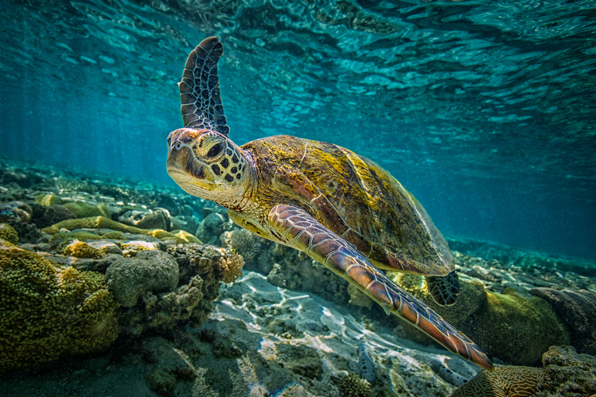
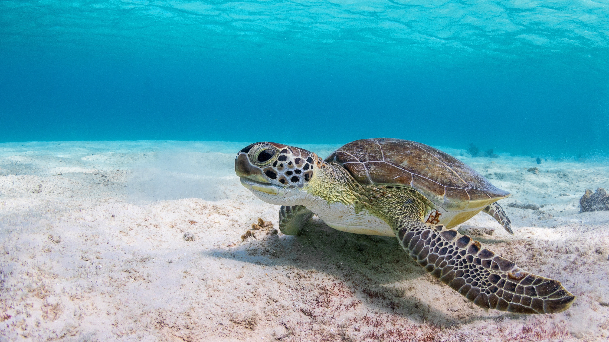

About the Turtles
Sea turtles have habited the ocean for more than a million years, playing a critical role in maintaning balance to the marine ecosystem. The past 200 years, however, has negatively affected the precious sea turtles. From being slaughered for their meat skin and shells to climate change causing habitat destruction, six out of the seven species are now considered endangered.
 - Main Hazards to Sea Turtles
- Pollution
- Plastic waste, petroleum, trash, and other forms of debris can affect the sea through chemical pollutants, causing weaker immune systems for the turtles and eventually leading to death. Fishing nets can cause entanglements resulting in the choking of sea turtles as well.
- Climate Change
- Climate change can cause sea levels to rise and strong storms to occur, destroying beach habits. Warmer temperatures for the oceans can change the current, destroying coral reefs and exposing them to new predators.
- Human Activities
- Sea turtles and their eggs are taken and killed by humans for food and often used for handicrafts and jewelry from their shells. Commercial fishing is also a huge threat as sea turtles are accidentally killed or injured by fishermen.
- Coastal Development
- The use of hotels and parking lots that are next to beaches disrupt the habitats of female turtles and newborns. Since newborns use the light of the moon to find their way to sea, the artifical lighting from street lamps and buildings will lead them the wrong way, exposing them to the dangers of automobiles, dehyydration, and predators.